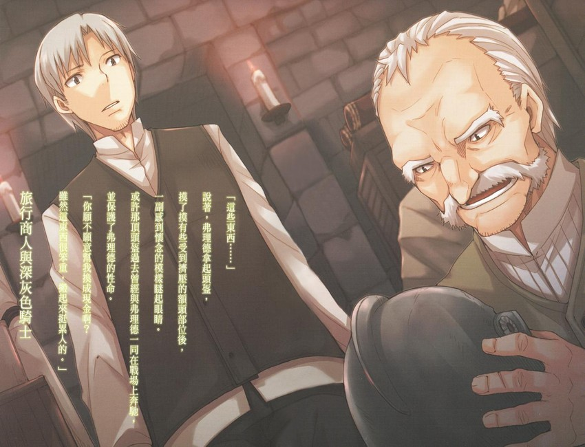

很不可思議地，無人居住的房子不需任何理由，就會以驚人的速度腐朽老化。
房子的窗戶會破裂，土質地面會凸起，屋頂會坍塌。
這棟為可憐旅人遮風避雨的屋頂曾有着氣派的外觀，但如今就連在蒙蒙細雨之中，也顯得搖搖欲墜。
可能是因為這棟石造建築物的地基打得牢固，支撐建築物四角的支柱周圍部位，還看得出昔日住宅的影子。羅倫斯此刻正擠進支柱底下躲雨。
礙於這樣的狀況，羅倫斯把載了貨物的馬車以及拉馬車的馬兒，分別安置在對面的支柱旁，以及隔壁棟的支柱旁。
羅倫斯靠着牆壁坐在地上生火時，從破了洞的屋頂清楚看見陰沉沉的烏雲。
「怎麼著？火還沒生好啊？」
說著，身材嬌小的少女一邊拍去長袍上的水，一邊貼著牆壁走來。
少女出現在老朽的石造建築物底下，看起來就像是一名為了巡禮而踏入老舊聖人遺蹟的虔誠修女。
然而，少女一來到羅倫斯身邊，立刻脫下長袍甩動身體的模樣，想必會讓人覺得有點不對勁。
儘管擁有如貴族般的美麗亞麻色長髮，少女頭上卻有一對動物耳朵，以一個十多歲的少女來說顯得太過纖細的腰部後方，垂掛着動物的尾巴。
羅倫斯以商人身分自立門戶至今，已進入第七個年頭，而與他一起旅行的少女，據說是高齡好幾百歲、擁有賢狼之名的巨狼化身——赫蘿。
「你還好意思這麼說。我這麼勤快地在生火，你卻在旁邊拍長袍上的水。」
生火步驟是拿着一敲就會冒出火花的礦石敲打幾次，然後，把事先碾碎、洗過、加以乾燥後撕碎的草莖點燃。在那之後會接着點燃麥桿，再讓火勢轉移到木頭上。
拍去水分後，赫蘿再次穿上長袍。看見羅倫斯總算讓火勢轉移到麥桿上，赫蘿露出有些冷漠的表情。
「咱還以為汝的怒火能夠加快生火速度。」
對於羅倫斯方纔的挖苦話語，赫蘿似乎沒有要正面響應的意思。
赫蘿一副把羅倫斯的話當成耳邊風的模樣，蹲在火堆旁烘着雙手。
火勢也蔓延到了羅倫斯用短劍所削下的木屑，並順利燒起木柴。過了沒多久後，火堆便熊熊燃燒起來。
「話說回來，剛纔真的是千鈞一髮。」
羅倫斯從木柴當中挑出帶有樹枝的木柴後，一邊用短劍砍下樹枝，一邊說道。
「嗯。誰叫有個大笨驢商人把拒絶不了的笨重貨物載在貨台上，才會拖慢行程。咱差點就要被迫在雨中睡覺。」
赫蘿先鋪上抹過油的鞣皮，然後躺在鞣皮上這麼說。
幾天前經過城鎮時，羅倫斯因為拒絶不了認識的旅行商人之托，而把鹽鯡漬魚載在貨台上。
由於加上了鯡魚的重量，一路上馬車只能夠緩慢前進，接着就碰到了這場雨。
不過，比起這件事情，赫蘿肯定純粹是討厭味道很重的鹽漬鯡魚放在貨台上。貨台是赫蘿的休息場所，她平常不是在上面悠哉午睡，就是梳理毛髮，而赫蘿的嗅覺太靈敏了。
「不過，也賺到了值得的利益。」
羅倫斯把樹枝削尖，然後從貨物裡取出幾尾鹽漬鯡魚，再用樹枝從嘴巴刺起鯡魚，一尾一尾地立在火堆四周。
照物主給的條件，羅倫斯最多可以吃掉十尾鯡魚。
難得有魚可以吃，如果想要做點費工夫的料理，可以用樹皮連同洋蔥、蒜頭奶油和魚一起包裹，然後埋進土裡，並在上方生火。經過一段時間後，只要挪開火堆再打開樹皮，一道鹹味十足又甘甜的蒸魚料理即大功告成。
羅倫斯今晚之所以沒有這麼做，是因為知道赫蘿一旦吃了這樣的料理，下次光是烤過的魚就會滿足不了她。
好東西讓人看了就會想要，吃了就忘不了。
只要不知道存在，也就不會有想吃的念頭。
「嗯。這魚烤過後……嗯，聞起來確實很香吶。」
聽到油脂滋滋作響的聲音，赫蘿立刻甩動起尾巴。
羅倫斯露出苦笑，並把所有木屑丟進火堆裡。
「現在是在森林裡，所以不用擔心會因為香味而引來一些有的沒的，但老鼠比較讓人擔心。」
才剛剛開始烤魚而已，赫蘿已經忍不住用手戳了戳烤魚，然後舔着沾在手指上的鹽巴。
看見赫蘿這麼喜歡鹹味的模樣，羅倫斯不禁覺得真的很像小狗之類的動物，但他知道如果把這想法說出來，赫蘿肯定會豎起尾巴的毛，大發雷霆一場。
「不過，應該也不用擔心老鼠唄。基本上，這種地方頂多只有人類會居住。」
說著，赫蘿終於忍不住直接從還沒串起來的鯡魚身上沾起鹽巴。赫蘿開心地舔完鹽巴後，繼續說：
「這種地方，怎麼會有這樣的建築物？」
說罷，赫蘿像個看見奇景的小孩子，仰望着千瘡百孔的屋頂。
赫蘿會這麼詢問，並不是因為她有感而發或是缺乏常識。而是因為，在一眼望去空無一物的荒野上，居然會有樣東西從大地上凸起。那感覺就像美麗光滑的肌膚上，突然冒出了一顆粉刺。
只要看見了這樣的建築物，就算不是像赫蘿這樣隔了好幾百年才離開村落麥田的人，也會有一樣的疑問。
羅倫斯兩人用來躲雨的建築物，正是被建蓋在如粉刺般的凸起物上。
「話說回來，汝怎麼會知道有這種地方？汝發現有可能下雨後，就像是認得路似地直接來到這裡，不是嗎？」
或許是舔了一陣鹽巴後感到滿足，赫蘿從羅倫斯手邊拿起剛削好的木棒這麼說。
羅倫斯才在想不知道赫蘿打算做什麼，便看見赫蘿從還沒用木棒串起的鯡魚當中挑出最大的一尾魚，然後用力把木棒插入魚嘴。
赫蘿應該是在傳達「這尾魚是咱的」的意思。
「我以前來過這裡。不過，那次是因為迷了路，所以偶然發現了這裡。」
赫蘿露出「原來如此」的表情，然後環視了四周一遍。
「那時候就已經是破房子了嗎？」
「不是，房子一沒有人住，很快就會損壞。我上次來不過是三年前的事情而已。」
赫蘿一邊聆聽羅倫斯說話，一邊將烤魚翻面。
面對食物時，赫蘿真是鎮靜不下來。
「也就是說，當時有人住在這裡啊？」
「嗯。而且是一個古怪的男人。」
羅倫斯想起當時的狀況，忍不住笑了出來。
不過，羅倫斯的笑容並非單純的笑意，而是夾雜了一些嘆息聲。
想必是察覺到了嘆息聲，赫蘿露出詫異表情看向羅倫斯。
羅倫斯抬起頭，然後輕輕搖了搖頭。
「一個人會在這種地方蓋這樣的石碉堡來住，怎麼可能不古怪。」
「嗯……這麼說也有道理。」
不過，怎麼會發出嘆息聲呢？
赫蘿表現出這般言外之意，並注視着羅倫斯。
雖然察覺到赫蘿的視線，但羅倫斯一直注視着火堆，完全沒有看向赫蘿。
「對方很喜歡擺架子嗎？」
赫蘿以不悅的聲調忽然這麼說，但羅倫斯抬頭一看，發現赫蘿的表情和語調完全不符，顯得有些悲傷。
「也不是這樣子的……」
對羅倫斯來說，那是一段不大願意與人分享的故事。
尤其是對赫蘿。
羅倫斯如果試圖隱瞞，赫蘿總會更帶勁地想要挖出秘密，就連這般個性的赫蘿，似乎也察覺到氣氛不對。
雖然赫蘿乖乖表現出願意罷手的態度，但耳朵顯得落寞地垂了下來。
「汝總是不大願意與咱分享過去的事情。」
說罷，赫蘿伸出手拿起烤魚。
赫蘿會這麼說應該只是帶著一些抱怨，而不是非得要聽到故事不可的意思。
儘管如此，看見赫蘿這般表現還是讓羅倫斯有些不忍心。
雖然鯡魚應該還沒烤熟，但似乎已經等不及的赫蘿大口咬下烤魚，並讓鹽巴就這麼沾在臉頰上。幫赫蘿擦去臉頰上的鹽巴後，羅倫斯先這麼說出開場白：
「疲累的旅途中，聽到好笑的故事會比較好吧？」
「疲累時沒有什麼比口味重的東西更好。」
赫蘿轉眼間已吃掉半尾魚，然後一臉不悅地喝着小桶子裡的酒。
羅倫斯知道赫蘿會做出任性大小姐的舉止只是裝模作樣而已，但也知道赫蘿是在撒嬌表示自己想聽故事。
羅倫斯一副不得已的模樣嘆了口氣，然後把方纔用來削樹枝的短劍放在火前燒。
「這把經常被我拿來利用的短劍……」
然後，羅倫斯開始說起故事。
「你看，這裡不是刻了字嗎？」
這是一把精心鍛造的短劍，無論去任何城鎮給任何一家鐵匠看，都不會感到羞愧。
這把短劍保護過羅倫斯好幾次，旅途中也以各種工具的身分供羅倫斯運用。
不過，事實上旅行商人拿着這樣的短劍，也有些太強悍的感覺。
赫蘿一邊叼着魚，一邊鑽進羅倫斯手臂底下，然後像貓咪一樣仔細打量着短劍。
「向面喝了什麼戶？」
赫蘿嘴巴叼着魚，硬是開口說話。
赫蘿應該是說了：「上面刻了什麼字？」
羅倫斯讓赫蘿坐在身旁，然後把短劍遞給赫蘿。
「願神憐憫。」
赫蘿露出感到意外的表情，或許她是覺得刻在武器上的字眼應該要更莊嚴一些。事實上，無論是二輪戰車、攻城槌，或是騎士在馬背上使用的大劍或長槍上面，都刻着莊嚴的字眼。但就只有騎士的短劍，會刻着「願神憐憫」這樣的無趣字眼。
羅倫斯以前也會感到在意，但一直認為可能是一種習慣罷了。後來，羅倫斯正是在來到這座石碉堡後，才得知其涵義。
「有些年紀大的人，似乎還會更直率地用古時候的字眼『憐憫』來稱呼短劍。」
赫蘿一副深感興趣的模樣點了點頭，然後把短劍放在火前燒。可能是磨得發亮的短劍在那瞬間反射了火光，赫蘿感到刺眼地閉上眼睛。
「哈哈。然後啊，有一位上了年紀的人，將這把短劍傳給了我。」
羅倫斯從赫蘿手中接過短劍後，讓視線落在老舊的劍柄上。
故事必須回溯到三年前。
那時候的羅倫斯連想都沒想過有可能與赫蘿相遇。
迷了路後以為幸運地找到人家，卻發現其實是來到惡魔的家。
對於每天忙於賺錢的商人來說，這會是讓人笑不出來的遭遇。
而且，如果是在無限延伸的荒野上，看見那樣的建築物突然出現，肯定會覺得是壞事即將發生的前兆。
空無一物的荒野上，出現了一座光禿禿的山丘，其四周打下一整排如海膽刺般尖起的木樁。
這般光景讓人聯想到了地獄，而設在山丘頂的石碉堡帶著肅殺之氣，也十分符合行刑場的氣氛。
當下之所以會覺得死神或惡魔出現了，不光是因為氣氛而已。
因為過于節省盤纏，而只帶了份量剛好的食物上路，所以昨晚已吃光最後剩下的糧食。
馬兒可以勉強吃着路邊的野草充饑，但人類不行。
緊要關頭時，就是殺了馬兒也要活下去；雖然這也是一種選擇，但對於商人而言，這將會造成與死亡具有相同意義的破產。
都怪自己太勤於賺錢，現在終於遭到天譴了吧。
依目前的條件來看，會有這般想法一點也不為過。
感到死心又加上空腹，羅倫斯險些失去了意識。
不過，現實感十足的歡迎儀式，讓羅倫斯忽然回過神來。
羅倫斯以為有一隻大蟲子從耳邊飛過，隨之傳來尖鋭的聲音。在那之後傳來了樹木顫動的聲音，羅倫斯也瞬間明白了是什麼東西飛過耳邊。
羅倫斯立刻跳下駕座，並躲在馬兒下方。
羅倫斯是受到了箭矢攻擊。
「我是迷了路的旅行商人！我只是一個旅行商人而已！」
然後，羅倫斯使出全力大喊後，還是看見兩根箭矢接連飛來，刺在地面上。射來的箭矢確實避開馬兒，並分別落在馬兒左右兩方，可見射箭者的技術高超。
可能是聽見了羅倫斯的大喊聲，之後沒見到箭矢再飛來。不過，對方有可能打算等待羅倫斯在這時探出頭來再射箭。羅倫斯抱著這般想法而不敢輕舉妄動時，終於傳來了腳步聲。對方似乎不是從石碉堡裡射箭，而是躲在斜坡某處攻擊。羅倫斯沒出息地從馬兒的雙腳縫隙看向腳步聲傳來的方向後，看見一名男子的身影。
男子停下腳步，這麼說：
「你說你是旅行商人？」
男子的聲音沙啞，就算是刻意裝得沙啞，也不難猜出男子年紀已相當大。
「是的。」羅倫斯回答後，男子忽然蹲了下來。
不同於聲音給人的印象，與羅倫斯四目相交的男子，是個身材矮小的老人。
「這是上天的旨意。幸好沒把你射死。」
男子揚起嘴角說道，但羅倫斯分辨不出對方是否是在開玩笑。
不過，男子站起來後，立刻轉過身子走了出去。
「逃過一劫了嗎？」羅倫斯靜靜待在馬兒底下這麼想著時，老人忽然回過頭說：
「喂！還在那裡幹嘛？你不是說迷路了嗎？」
羅倫斯輕輕地探出頭後，老人指向山丘上的石碉堡這麼說：
「招待一下前途無量的年輕人吃飯有何不可。而且，我也有事要拜託你。」
一個守護碉堡的弓箭手，還真敢說出這樣的台詞。
老人表現得好像自己就是碉堡的主人一樣。以這年紀來說，老人的牙齒還算齊全，老人露出牙齒笑着這麼做了自我介紹：
「我是弗理德，負責管理珍菲爾伯爵統治下的魯姆碉堡。我是受到認同的一城之主。」
弗理德的說法，像是識破羅倫斯嘲弄他模仿碉堡主人的內心想法。不過，說完話後，弗理德仰望起石碉堡，忽然放鬆了表情，一副難為情的模樣笑着說：
「話雖這麼說，我已經很久不曾對人射箭了。唉呀，還好沒有射中。」
弗理德大笑一陣後，往山坡上走去。
羅倫斯在馬兒底下注視着弗理德的背影好一會兒，感到有些驚訝和困惑。羅倫斯聽過珍菲爾伯爵之名。珍菲爾伯爵曾經統治過這一帶地區，是個容易得意忘形而出了名的領主。不過，現在只有去到街道旁的客棧，才會從老闆口中聽到珍菲爾伯爵的話題。
畢竟這位領主統治這塊土地，已是超過十年前的事情。
弗理德在這座沒了主人的石碉堡裡，到底在做什麼呢？
士兵捨棄碉堡後，經常會聽到有盜賊在碉堡住了下來，弗理德也是同夥嗎？
如果是這樣，怎麼完全感覺不出弗理德想要搶奪行李？
如果為了無益的事情冒險，就會失去商人的資格，但商人如果缺乏好奇心，同樣不夠格。
羅倫斯默思了一會兒後，最後決定爬出馬兒底下，並撿起弗理德射出的箭矢丟到貨台上，然後握住繮繩追着弗理德而去。
通往碉堡的螺旋狀道路受到完善的維護，斜坡上到處打入了削尖的木樁。雖然碉堡的氣派模樣給人「就是此刻敵人攻來，也能夠立即做出防禦」的感覺，但似乎少了一些霸氣。
直到穿過敞開的石門後，羅倫斯才發現少了霸氣的原因，是出在碉堡太安靜了。
「……唉～到了這把年紀，光是要上下坡都很吃力。」
讓馬車進到中庭後，弗理德一邊用弓拍打腰部，一邊這麼說。
搭建得堅固的石牆內側，也有着維護完善的碉堡生活。
碉堡內的設施齊全，包括家畜寮舍、菜園、馬廄，還有墓地和小小的祭壇，祭壇上還擺設着鮮花。
二層樓高的建築物外觀美麗，一眼就能看出有人員在維護，感覺上敞開的木窗或門後隨時可能有人探出頭來。
然而，羅倫斯照着弗理德指示綁住馬兒的這段時間，不僅沒有人探出頭來，甚至感覺不出有其他人的動靜。
羅倫斯只聽見了豬、鷄，以及少許羊只的叫聲。
說得直率一些，碉堡內安靜得像是所有士兵全逃了出去一樣。
「嗯。我本來以為是我多心，但你的臉色還真的很差呢。」
在弗理德帶路下，羅倫斯一邊一起走着，一邊觀察四周狀況時，忽然聽到弗理德這麼說。
因為隱瞞也沒有用，所以羅倫斯老實地回答：
「老實說，我前天吃過飯後，就沒再吃過東西了。」
「嗯，原來是這樣啊。那我招待起來會比較有成就感。就來準備剛切好的豬肉，還有……啊！對了，今天早上保羅那傢伙在水道里生了鷄蛋……」
弗理德一邊自言自語，一邊走進建築物內。
雖然大家會說年紀大了就容易自言自語，但如果羅倫斯觀察得沒錯，弗理德的表現應該是獨居過久的人會有的特徵。
羅倫斯想著這些事情，跟着走進屋內後，看見了乾淨又整齊的廚房。
「往這邊走。」
羅倫斯通過還可看見泛紅餘燼的爐灶，被帶到最裡面的房間。
房間裡放著老舊的木桌和椅子。
雖然羅倫斯坐下來後聽見讓人不安的嘎吱聲，但椅子上一塵不染。
「哦哦，那椅子還撐得住你的重量啊？看來我的技術也還不錯。」
雖然弗理德以一城之主自居，但似乎不討厭做木工。
話說回來，如果是一城之主，根本不會親自帶著武器特地來到出現在來訪者面前。再說，如果一城之主走出碉堡，不就失去了要塞的意義？
「你就放輕鬆一點吧。這碉堡只有我和你而已。」
羅倫斯聽過單獨座落在森林裡的小屋裡，住着獨居美女的故事。
通常這個美女不是魔女、妖精就是惡魔，而且帶來幸運的可能性極低。
不過，如果換成是看見來訪者就射箭的老人，會是什麼狀況呢？
總覺得好像沒必要把老人當成怪物之類的存在。
「您一直獨自住在這裡嗎？」
聽到羅倫斯的詢問後，弗理德露出笑容。
羅倫斯知道不是自己多心，總覺得那笑容像是帶著自嘲意味。
「我被指派到這裡時，還有五位勇敢的屬下。後來一人接着一人脫隊，最後只剩下我一人。」
「是因為戰爭嗎？」
羅倫斯接着詢問後，弗理德便露出了嚴肅的表情。
羅倫斯心想該不會問了不該問的話題時，突然聽到弗理德仰天大笑。
「哈！哈！哈！如果是戰爭就好了。我被派到這裡已經十幾年了，現在只有迷了路的人才會來這裡！」
弗理德大笑說道，然後突然嘴巴一閉，瞪着羅倫斯說：
「你頂多是吃晚餐時小心一點就好。免得吃太飽會不想出發。」
然後，弗理德又笑了起來，跟着急急忙忙地往廚房走去。
雖然知道這裡不是通往惡魔所在的地獄入口，但羅倫斯忍不住暗自嘀咕：「真是闖進了一個奇妙的地方。」
此刻時間還算早，屋外也剛染上暗紅色不久，但弗理德已經端出在蛋汁裡放入肉乾，然後用動物油和大塊蔬菜一起炒過的料理。
餐桌上的小麥麵包似乎是最近才在碉堡裡烤出來，吃起來依然蓬鬆柔軟；端出來的酒似乎也是在碉堡裡釀造的麥芽啤酒。喝了一口後，發現放了大量可在庭院菜園裡看見的香草。
這確實是一場盛情款待。
而且，在羅倫斯擔心被下毒而心生戒心之前，弗理德已經先開心地乾了杯，並表現出讓人感覺不出是個老年人的旺盛食慾。
「嗯，果然比一個人吃飯的時候好吃多了。快吃啊！怎麼啦？年輕人就要多吃一點啊。你杯子裡的酒怎麼都沒有減少？」
羅倫斯當然餓壞了。
羅倫斯開動後，轉眼間便吃光了料理，那速度之快讓弗理德都瞪大了眼睛。
「真是吃得太飽了。」
弗理德拿起方纔用來切肉和麵包的短劍砍下枝條當牙籤，然後叼着牙籤這麼說。果不其然，雖然弗理德自稱是一城之主，但看起來卻像一般會在村落裡下田種菜的健朗老人，絶非貴族或騎士之流。
用餐時弗理德不斷向羅倫斯發問，像是「從哪裡來的啊？在做什麼生意？故鄉在哪裡？娶老婆了沒有？」之類的問個沒完。因為必須回答問題，又要把好吃的料理吃下肚，所以羅倫斯根本沒有多餘時間發問。
如果想要展開反攻，現在正是時候。
「謝謝您招待如此佳餚。如果要在客棧吃到這樣的料理，肯定要拿出金幣來。」
羅倫斯以符合商人的作風，慇勤地道謝。
「這樣啊。哈！哈！哈！」
喝了酒而臉頰泛紅的弗理德好心情地大笑，發出「嗯、嗯」的聲音頻頻點着頭。
「不僅是小麥麵包烤得好吃，豬肉的肉質也是好得不得了。不過，這裡的土地應該種不出小麥來，要準備豬或羊的飼料也不可能自給自足吧。您是怎麼處理的呢？」
弗理德臉上掛着笑容，注視着被用來取代盤子，並且吸取了大量油脂的麵包。
雖然臉上帶著笑容，但明顯看得出弗理德在思考着什麼。
老人家總是會因為很想把一般會忌諱說出來的往事說給別人聽，而痛苦掙扎。
「而且……珍菲爾伯爵已經在好幾年前就……」
「嗯。」
弗理德很快就拿定了主意。
點了點頭後，弗理德拿起用來取代盤子的麵包，跟着把麵包撕成四大塊，那動作就像要撕去內心裡的訓誡一樣。
「我收到最後一封信，已經是六年前的事情了。寄信者還是一個自稱是伯爵外甥的騎士。伯爵似乎是在遠征之地病死，實在很可惜，就這樣少了一位人才。」
弗理德所說的內容，與羅倫斯的記憶果然沒什麼太大出入。
「那封信寫着伯爵的遺言。遺言上說要把這座碉堡託付給我，還要我好好守護領地。信裡還寫着杜拉修道院會送來足夠的生活所需品。雖然伯爵的個性爽朗，就連詩人都會歌頌他，也有很多逸聞，但同樣一直認真地經營自己的人脈。」
羅倫斯心想珍菲爾伯爵可能是在領地收入較多的時期，一直捐錢給修道院。
原來就是因為這樣，弗理德才能夠在這座單獨座落于不毛之地的山丘碉堡裡獨自生活。
「我原本是來自一個了無生氣的村落。在超過二十年以前，在全世界掀起暴風般的大戰熱氣之中，我當過了冒牌傭兵。我就是在那時候知道伯爵知行合一的作風。伯爵是個讓人非常願意服侍他的主人。」
「您是在說……從鞋匠到牧羊人都會夢想出人頭地的戰亂時代吧。」
羅倫斯一邊邀弗理德喝酒，一邊說道。弗理德露出驚訝表情，然後一副滿意模樣點了點頭。
「沒錯。我說的就是不管是再怎麼荒涼的不毛之地，諸侯也都會為了得到那塊土地，而手拿武器奔走的時代。」
弗理德以符合老人的作風，一副感到懷念，又顯得有些驕傲的模樣描述着往事。
不過，羅倫斯心裡很明白。他知道事實上只有極小一部分的地區發生戰爭，卻被形容成宛如全世界充滿戰亂似的故事。這是因為那場戰役實在太過壯烈，所以在各地城鎮掀起話題。
羅倫斯當然沒有要潑冷水的意思，於是保持着沉默。不過，弗理德忽然喝了一口酒，然後看似愉快地注視着羅倫斯說：
「哈哈！你還這麼年輕，卻懂得自製。我還以為你會說『你這個無知的老頭子』呢。」
弗理德的話語讓羅倫斯感到驚訝，而不禁露出苦笑。
雖然待在這種荒郊野外，但弗理德確實知道時代變了。
「明明是發生在遙遠地方的戰爭，不知不覺中卻被誤解成是在爭奪鄰近土地的例子並不罕見。那場戰亂透過人們口耳相傳而延燒了下去。不管是住在城鎮的人，還是在村裡耕作的人，都很少有機會出外旅行。而且，旅人也都像你一樣，不會做出潑村民冷水的舉動。不知不覺中，人們腦裡已經認定全世界陷入了戰爭漩渦之中。」
當時想必是個平穩的時代。
雖然也曾聽說因為謡言而實際引發很多戰爭，但似乎很多狀況是當兩軍對峙並朗誦檄文時，才發現彼此想法有出入。
世上存在着很多像這樣的笑話。
「當時就是這樣的狀況，所以就連在外面也被形容是容易得意忘形的珍菲爾伯爵，盲信了酒吧的謡言。聽到伯爵宣言要在這裡蓋碉堡時，我真是像一隻嚇壞了的公鷄一樣。」
說著，弗理德把撕碎的麵包丟向窗外。
「斯圖加特！」
弗理德這麼大叫後，窗外傳來近似馬蹄的腳步聲，但傳來叫聲後，解開了是誰擁有斯圖加特如此響亮名字的疑問。
斯圖加特似乎是一隻豬。
「不過，建蓋碉堡能夠讓很多人找到工作，而且珍菲爾伯爵出手又很大方。這座碉堡也就這樣被蓋好了。」
「也就是說沒有敵人攻來，是嗎？」
聽到羅倫斯的話語後，弗理德一副不想從夢裡醒來的模樣，緩緩點了點頭。
「我也記不大得了，大概在是十幾年前吧，我們在這裡幫助了很多迷路的人，也曾經聽到過下了山的盜賊想要攻擊這裡的謡言。但最後這裡一次戰爭也沒發生過。」
面對這塊光禿禿一片、空有寬敞土地的荒野，光是展開攻擊都顯得浪費，而守護這裡也一點益處都沒有。這裡只要被包圍住，就無法做補給，轉眼間就會淪陷。
這裡沒有攻擊的價值，也不適合防守。
所以這座被擱置的碉堡歷經十年以上的歲月，也從來沒有淪陷過。
「話說回來，伯爵過世後，也沒聽說過有任何人攻入領地。這塊土地太過荒涼，所以其他傢伙也不會想要得到。這不正是教會給我們的教誨嗎？所謂不擁有才是幸福。」
或許是酒精起了作用，弗理德的笑意裡夾雜了些許憤慨。
弗理德在碉堡裡住了十幾年。
如果沒遇過一次戰爭，或許會有些遺憾也說不定。
「不過，伯爵留下來的特權似乎也將在明年夏天期滿。不久前我才剛收到了一封信。」
「咦？」
羅倫斯驚訝地說道，弗理德也在那同時站了起來。
「所以，我剛剛不是說過幸好沒把你射死嗎？你是旅行商人吧？」
弗理德朝向窗外再丟了一塊麵包後，這回還夾雜了鷄叫聲傳來。那可能是在水路生了鷄蛋的保羅叫聲。
安靜的碉堡裡瞬間變得熱閙。
「我有事情想拜託你。」
「這……好的，如果我能幫得上忙的話。」
雖說這陣子羅倫斯在行商路線上的生意已經好不容易上了軌道，但還是迫切渴望掌握到新生意的機會。就算這座碉堡的領主早已不在人世，特權也即將到期，應該還是有一些積蓄才對。如果能夠順利從中獲取利益，當然是再好不過了。
當羅倫斯在天平兩端衡量着獲救的恩情，以及自己的慾望時，一路盡忠守護碉堡的老人，露出顯得爽朗的笑容這麼說：
「我希望你幫我清算這座碉堡。」
羅倫斯抬起了頭後，才自覺露出了毫無防備的表情。以一個商人來說，這樣太沒出息了。
「我打算去旅行。出發前，我希望把所有東西都換成金錢。」
「這點……我是可以幫忙，只是……」
「我在這裡奉公職守了十多年，應該夠資格得到這些回報吧。最重要的是，我盡責地守護了領地的安全。」
最後一句話，弗理德是以醉漢的開玩笑口吻說道。
「你今天就先好好睡一覺好了。畢竟很久沒有客人到訪了，我可是在床鋪上鋪了滿滿的麥桿，你等會兒就為床鋪帶來的舒適感大吃一驚吧！」
弗理德以像個戰場上的騎士口吻誇張地說道，然後開心地大笑起來。
「人類所建造的建築物當中，碉堡是僅次於教會，第二充滿機能美的地方。」弗理德一邊走下石階，一邊說道。
想要爬上建蓋在山丘上的碉堡，一定要先穿過呈右螺旋狀的坡道。雖然這坡道陡峭，但還是足以讓馬車通行，同時也做了設計巧思，也就是敵人騎馬衝上來之際，面向碉堡的右手邊會一直是沒有遮擋物的狀態。一般來說，騎士會用右手拿武器，左手拿盾牌，所以在碉堡上比較容易展開攻擊。
保護碉堡的石牆上設有洞孔，其目的除了用來觀察敵人狀況之外，還考慮到困守孤城時能夠掌握到月日，而配合太陽和曆書決定洞孔的位置。
白天的太陽高度如果會經過某個洞孔，就可以靠這些信息推敲出大致的月份。
另外，因為石碉不會吸水，所以碉堡各處挖了用來收集雨水的水路，並讓水路流向菜園附近。
水路流出的位置放了瓮子，不浪費一滴水地收集水，就算水溢出瓮外，埋在地底下的石板也會接住水，所以最終還是可以在水井取到水。
如果是更加氣派的碉堡，據說還會將排氣口設計成繞過整座碉堡，以便在爐灶冒出的熱煙排出屋外之際讓住人取暖。
羅倫斯根本無法想象碉堡會有這般機能。
「一個人要維護碉堡實在很辛苦。尤其是石頭坍塌時，根本就束手無策。」
雖然弗理德這麼說，但羅倫斯覺得弗理德好幾年來能夠獨力維護好這座石碉堡，根本可以算是一種奇蹟。
吃完早餐後，弗理德帶領羅倫斯到了地下的寶庫。寶庫當然沒有被敵人破壞過，並且還保持着完美的狀態，一點兒也沒有被濕氣和黴菌侵蝕。
「不過，雖說是比較值錢的東西，但還是以珍菲爾伯爵來到這裡時所留下的東西為主。因此對我而言，這些都是標不出價來的寶物，但是你覺得呢？以商人的眼光來看，這裡面有能夠換錢的東西嗎？」
燭光籠罩下，羅倫斯看見了高身分者旅行時所使用的帳篷和旗幟，以及長形衣箱和日常器具。帳篷和旗幟看起來確實是使用了高級布料，也沒有發霉，所以應該能夠賣得不錯的價格。日常器具方面沒有高級到採用氣派的銀製餐具，都是一些錫製或鐵製的東西。當然了，這些器具只要拿去熔燬，至少會有金屬本身的價值。另外還有記載了這座碉堡的權利書，以及免稅特權的羊皮紙，但這裡畢竟是十多年來連盜賊都忽視其存在的碉堡。可想而知，這般碉堡的特權證書一點價值也沒有，但如果颳去文字，就能夠再次以羊皮紙便宜賣出。說到其他挖出來的寶，頂多只有寫了騎士冒險故事的複本而已。
羅倫斯在腦海裡攤開賬簿，然後一邊加上幫忙換成現金時的手續費，一邊一件一件物品地告訴弗理德金額。
弗理德在抹了一層蠟的木板上，用短劍一一刻上價格。
「嗯，是這樣的金額啊……」
記下最後一筆金額後，弗理德一副感到佩服的模樣說道。
「帳篷和書本的金額都很高，或許能夠作為捐贈金讓您帶進修道院。」
在那之後，弗理德就能夠自在地過着每天祈禱和思索的日子。
聽到羅倫斯的話語後，弗理德大笑說：
「哈！哈！哈！我可是在這荒涼地方每天望着天空和地平綫一路生活過來的人啊！我怎麼可能把錢花在那種事情上！」
弗理德做出像個年輕人的發言，然後深深吸入一口氣，並化為嘆自心吐了出來。
「我是為了以劍得到領地，才會離開村落。事到如今不會想要安穩地死在有屋頂的地方。我是隷屬於珍菲爾伯爵騎士團的弗理德·裡德梅耶！」
弗理德雖然是老兵，但還是有老兵的氣勢。
羅倫斯聽到弗理德的話語而心生某種感動時，弗理德忽然看向他說：
「說到騎士，讓我想到了一件事。有一樣最重要的東西忘了叫你幫我估價了。」
「最重要的東西？」
羅倫斯反問道，但弗理德沒有回答。弗理德放下木板，並把短劍插回腰上後，朝向空間不算寬敞的寶庫角落走去。
然後，弗理德挪開放了伯爵寄放帳篷和旗幟的箱子，並一鼓作氣地掀開舖在箱子下方的深紅色布料。羅倫斯以為是建造地下室時的構造使然，才會有一塊凸起的地方，結果發現紅布底下出現了一隻足以裝得下一個大人的大木箱。
木箱裡到底裝了什麼呢？羅倫斯的這般疑問很快地得到瞭解答。
弗理德掀開木箱的蓋子後，在燭光照亮下，羅倫斯看見像一個人縮成一團的身影。箱子裡裝的，是款式略舊、但從頭盔到鞋子一應俱全的整套盔甲。

「這些東西……」
說著，弗理德拿起頭盔，摸了摸有些受到擠壓的額頭部位後，帶著思念之情眯起眼睛。
或許那頂頭盔過去曾經與弗理德一同在戰場上奔馳，並保護了弗理德的性命。
「你願不願意幫我換成現金啊？雖然這東西很笨重，搬起來挺累人的。」
說話的同時，弗理德把頭盔輕輕丟向羅倫斯。
頭盔表面上了足夠的油，雖然色澤變得黯淡，但沒有生鏽。
這套盔甲只要稍微磨亮一下，就能夠再次戴上戰場。
不過，羅倫斯在腦裡浮現戰服的價格後，看向弗理德。弗理德顯得難為情地笑笑。
「年輕時保護過我性命的這套戰服估起來，值多少錢呢？」
羅倫斯曾聽說過夢想成功的年輕人離開家園後，究竟會成為騎士還是山賊，就取決於能否湊齊一整套盔甲。
盔甲是如此有價值的物品，就像光是穿在身上，就能夠看出身分的國王外衣一樣。
可是，真的可以賣掉如此貴重的盔甲嗎？
這麼想著的羅倫斯無法答得順暢：
「……我想，應該可以拿到把這裡所有物品加起來的……價錢吧……」
「嗯，這樣啊。如果說比伯爵在戰場上威武飄揚的旗幟和帳篷還要高價，就表示之前穿這套盔甲的我，也是個相當了不起的人物啊。」
如果光是考慮金錢價值，或許確是如此，但從弗理德的口吻中，明顯聽得出這不是他的真心想法。大家曾經對著旗幟上的壯麗刺繡，以生命宣誓忠誠，但如今與色澤變得黯淡的盔甲相比，旗幟卻只有幾分之一的價值。
隨着時光經過，只會剩下物品本身的價值。
羅倫斯痛切感受到名譽或權威是多麼虛幻的東西。
「噗哈哈！如果是以前，我連想也沒想過要賣掉盔甲，但現在面對盔甲說不出話來的人不是我，而是商人，真是太有趣了。」
被弗理德拍了一下背後，羅倫斯不由地咳了一下。
朦朧的燭光下，讓弗理德更顯得是在強打精神。
「……說實話，就算沒有賣掉盔甲，其他東西應該也夠湊齊盤纏。而且，您都有能力維護這座碉堡了，想必要當石匠或園藝師來維生也難不倒您吧。」
「沒關係，為了讓我守護這座碉堡，伯爵正式賜給了我騎士身分。既然要離開這座碉堡，就不需要盔甲了。」
不管是村落或城鎮，最讓人頭痛的生意對象就是頑固老人。頑固老人不僅態度強硬，而且一定會堅持主張到底。在弗理德身上，羅倫斯也察覺到了這般氛圍，但羅倫斯是因為看見弗理德顯得落寞的側臉，才放棄說服。
事實上，弗理德不想賣掉盔甲。
可是，一整套盔甲要作為陳年回憶帶著走，未免太沉重了。
弗理德的這般心聲顯而易見。
「好了，上來去喝點酒吧。既然決定要離開這裡，有些酒我想先開來喝。」
弗理德用着惡作劇的口吻這麼說，刻意做出「現在還是上午，就提議要喝酒」的表現，好讓羅倫斯知道他過往的生活有多麼快活。
把頭盔收進木箱後，羅倫斯兩人爬上階梯離開了寶庫。
「我參加過幾次大規模的戰爭。其中也包括了就算過了一千年後，編年史作家還是會記得的戰役。我的頭盔不知道被箭射中而彈開過多少次。鎧甲被敵人的斧頭打到彈開來的時候，我簡直是頭暈得眼冒金星。後來拿去鐵匠那裡修理時，鐵匠還說我的鎧甲沒有裂開來，肯定是受到了神明庇佑。」
弗理德從食物儲藏室拿來了透明葡萄酒，倒進杯中後出現薄薄一層沉澱物。與因為葡萄渣或為了掩飾味道而放入生薑等質量低的葡萄酒截然不同，杯底那層沉澱物，是羅倫斯只耳聞過其存在的高級葡萄酒特有的東西。
這種酒絶不是適合坐在屋檐下，一邊讓鷄只啄着鞋子上的毛球，還讓豬只在旁邊吵着要吃東西，然後一邊喝的酒。
羅倫斯猶豫着該不該喝葡萄酒時，弗理德一臉開心得不得了的表情。
「這一定是神明的指引！居然來了一個識貨的年輕人！」
弗理德這麼說完後，硬是邀羅倫斯乾杯，並一鼓作氣地喝光了酒。
這麼一來，羅倫斯就不得不喝了。
可以的話，羅倫斯還真希望喝下後能夠吐出來裝在酒桶裡，再拿去城裡賣。
「其實我是很想跟伯爵再喝一次，但沒辦法囉。」
說著，弗理德露出了笑容。那笑容不屬於比羅倫斯多走過好幾倍歲月的老人笑容，而是與羅倫斯同年……不，應該是比羅倫斯更年輕、內心仍抱著英雄夢的少年笑容。
羅倫斯喝光酒後，看見杯子裡又被倒進貴得讓人昏眩的高級酒。於是害怕會喝醉酒的羅倫斯開口說：
「離開這裡後，您打算去哪裡呢？」
聽到羅倫斯的詢問後，弗理德抬高視線地看著羅倫斯，並看似愉快地在自己的杯子裡倒酒。
明明是貴族用晚餐時會喝的高級酒，弗理德卻貪心地倒了太多，結果灑了一些酒出來，剛好被經過的羊只舔去。
「我想去找以前的同伴。同伴偶爾會寄信來。不過，當然是透過重情又重義，到現在還會送生活品過來的修道院寄來。」
就是喝劣質的啤酒時，也沒有人這麼粗魯。
弗理德一口喝下將近半杯的酒，再咬了一口豬肉香腸。
「昔日威武的同伴，也差不多走到了人生的盡頭。這恐怕是跟同伴聊往事的最後機會。還有，我想去看看以前守護過的城鎮變成什麼樣，也想去以前因為我們而遭到淪陷的城鎮教會贖罪。雖然我這樣子，但還是想上天堂。」
弗理德沒出聲地笑笑，那模樣顯得迷人，會讓人感覺到弗理德過往真的在戰場上訓練過。想到自己老了後恐怕沒辦法變得像弗理德這樣，羅倫斯不禁有些不甘心。
「然後，最後如果能夠躺在某處的溫暖草原上死去，那就好了。你好像是過着旅行生活的旅行商人吧。」
弗理德的話題轉向了羅倫斯。
「是的，沒錯……」
「那這樣，你沒有過這樣的經驗嗎？當你餓着肚子一邊想著自己搞不好會死掉，一邊呈大字型地躺在好天氣的草原上時，會有一種莫名的爽快感。」
弗理德一邊仰望天空，一邊這麼說。
被弗理德這麼一說，羅倫斯有些嘔氣地喝了口酒。
羅倫斯身為商人自立門戶以來，只知道盯着地面看有沒有錢掉在地上。肚子餓的時候，羅倫斯會幻想不知道能不能把鞣皮汆燙來吃，或是一直注視着圓渾有肉的馬兒屁股看。
呈大字型地躺在地上，仰望天空準備接受死亡；羅倫斯出生以來從不曾擁有過像這樣的覺悟，甚至想象不出那種感覺。
這般事實讓羅倫斯感到很不甘心，而面向着前方。
「可能的話，我是很想這樣子死去。但事實上……」
在這之後弗理德似乎嘀咕了什麼，但羅倫斯沒能夠聽到內容。
羅倫斯反問後，弗理德卻說他根本沒說話。
弗理德似乎是動了嘴巴卻說不出口，所以喝酒想要把話吞回去。
「已經打開寶庫讓商人看的騎士大人，事到如今還有什麼好隱藏的呢？」
這句話對特別注重名譽的騎士，似乎很有效果。
弗理德用力拍了一下自己的額頭大笑，然後丟了一塊搭配料理的麵包給一直虎視眈眈的斯圖加特。
「你說的一點也沒錯。唉呀，我只是一邊說話的時候，忽然驚覺到自己到了這把年紀，終於也會開始想這些事情。」
斯圖加特還想要討東西吃而靠過來，但弗理德推開它的鼻子，然後把盤子推到屋檐下最裡面的位置說：
「呈大字型躺在草原上仰望天空，這其實是我初次上陣時的經驗。」
羅倫斯完全無法想象那會是多久以前的事情，但弗理德一副彷彿昨天才發生似的模樣，開始描述起來：
「那時我穿著笨重的盔甲，騎着不熟悉的馬兒，心情急得不得了。我和敵人對上，並交手二、三槍後，我以為自己打倒了敵人，結果發現時已經呈大字型躺在地上仰望天空。盔甲這東西真的很笨重，雖然它很堅固，但一旦倒下來，就沒辦法獨力站起來。再來就只能等着被人刺死，不然就是等同伴來解救。」
羅倫斯想象了騎士像一隻烏龜翻過來的畫面，差點笑了出來。
「我當然已經做好一死的心理準備。而且因為受到倒下的衝擊，我什麼也聽不見。只看見一片晴朗的初夏天空在眼前延伸開來。戰亂之中，我真的以為自己看到了天堂。」
然後，弗理德在最後壓低聲音說：「其實我是在以為自己打倒了敵人的那一瞬間，太過興奮而落馬。」
就算沒有穿著笨重盔甲，光是從高大的馬兒背上掉下來，也很容易致死。
弗理德落馬後不僅只是暈厥過去而已，也沒有被長槍刺死並被奪走身上所有東西，看來應該原本就是一位受到神明庇佑的人物。
不過，弗理德只說了這段往事，並沒有把說到「事實上」就停頓下來的話繼續說下去。
弗理德似乎也知道自己沒能成功敷衍過去，他一副不肯死心的模樣一會兒搔搔鼻子，一會兒喝酒，不然就是望着斯圖加特和保羅在互搶麵包。
直到喝光第三杯葡萄酒後，弗理德才總算開口說：
「我有事想拜託你。」
「是。」
弗理德隔了這麼久才開口，所以羅倫斯也已經猜出大概會是什麼事情。
在寶庫裡看著盔甲時，弗理德露出了那麼落寞的表情。
羅倫斯藏不住笑意地露出笑容回答。
臉頰已經泛紅的弗理德，用着顯得獃滯的眼神看向羅倫斯說：
「你願意見證我的最後一場戰役嗎？」
出發前，他希望再一次沉醉于過往回憶之中。
以一個對於一切事物都能夠不抱一絲憐憫心換成金錢的商人來說，羅倫斯自知還不能夠獨當一面。對羅倫斯而言，這是會讓人心神寧靜下來的請求。
「我很樂意幫忙。」
弗理德猛然站起身子，然後一副感到刺眼的模樣看向太陽。
雖說一整套盔甲的狀態不差，但繩子和皮革的部位畢竟還是已經腐爛或生了銹，所以必須先換新。
幸虧弗理德擁有連工匠都會臉色鐵青的精巧手藝，所以轉眼間就利用鞣皮做好繩子，併進行修補。
弗理德進行修補的這段時間，羅倫斯用麻布沾了大量油脂，然後擦着盔甲、鎧甲以及手背套。
盔甲上到處可見刀刮傷以及凹痕。
尤其是鎧甲上，還看見了會讓人覺得就算穿著鎧甲，也可能是致命一擊的大凹痕。
弗理德本人則是大笑說他也覺得很不可思議怎麼自己沒死。
很多時候都是因為這樣的狀況而在世上存活下來。
聽說該死的時候，就是遇到村落的孩童亂揮木槍也會死。
「好了，差不多是這樣吧。」
弗理德在最後綁上皮繩時，早已經過了中午時刻。
此刻羊只和斯圖加特感情要好地在寮舍旁吃草，保羅不知道在碉堡後方做什麼，時而傳來雄赳赳的叫聲。
看著擦得閃閃發亮，同時刻滿百戰傷痕的盔甲，就是一路身為商人走來的羅倫斯看來，也覺得帥氣得讓人胸口發熱。
怎麼能夠賣掉這盔甲呢？
羅倫斯腦中甚至浮現了這般想法。
「這些不知道穿不穿得上去。」
弗理德一邊與羅倫斯一起望着盔甲，一邊這麼說，其聲音明顯上揚。
弗理德應該想穿上盔甲想得不得了，但在羅倫斯面前，難免有些難為情。
「呃……還差武器呢。寶庫裡有長槍和長劍，我去幫您拿過來吧。您要哪一種呢？」
羅倫斯問道。弗理德沉思了一會兒後，這麼說：
「幫我各拿一把長劍和長槍來。」
「各一把？」
「嗯。我來拿長劍，你可以拿長槍嗎？」
據說穿著盔甲騎在馬背上揮舞長劍的動作，就連全身肌肉發達的年輕騎士做起來都很吃力。
騎在馬背上時多是使用長槍，然後只要握住長槍向前衝就好。
不過，羅倫斯照着弗理德所說，跑了一趟寶庫，拿來長劍和長槍。
長劍和長槍的狀況比盔甲差，長槍的矛頭更是變得搖搖欲墜。
如果也不修理好這些武器，恐怕很難進行模擬戰；羅倫斯一邊這麼心想，一邊走出中庭後，看見了一名小個子騎士。
羅倫斯不禁看傻了眼。原因不僅是弗理德獨力就穿上笨重的盔甲，還有弗理德的模樣。
弗理德上半身被泛黑的銀色盔甲裹起，跨在其腳下的不是高大馬兒，而是悠哉吃着草的羊。
「這是我的愛羊，愛德華二世！」
愛德華二世一臉無奈地發出「咩～」的一聲。
弗理德想必也明白，自己無論在體力上或技術性上，都難以騎上馬背。
不過，弗理德騎在羊身上的模樣實在太滑稽了。
羅倫斯忍不住笑了出來後，弗理德也大笑起來，並大聲說：「拿長劍來！」
「我乃珍菲爾伯爵麾下，向深紅色老鷹效忠的弗理德·裡德梅耶！」
弗理德用右手握住長劍，然後把劍柄抵在胸口、把刀刃部位抵在額頭上大喊。他的動作毫不含糊，而且氣勢十足。
弗理德揮動長劍的動作也十分利落，看來似乎沒有忘記穿著笨重盔甲時，應如何使用沉甸甸的長劍。
「拿起長槍吧，年輕人！」
然後，弗理德大喊道。
羅倫斯急忙拿起矛頭搖搖欲墜的長槍，那模樣顯得有些糗。
下一秒鐘，弗理德不知道用左手拍打還是捏了愛德華的屁股。
羅倫斯才聽到如哀嚎般的聲音，便看見愛德華化為一陣狂風跑了出去。
羅倫斯驚訝地站在原地不動時，弗理德穿過其身旁，並巧妙地揮動長劍打中長槍槍柄。
「年輕人，怎麼著？嚇到了啊？」
弗理德一手抓住陷入混亂的愛德華脖子，硬是讓愛德華轉向面對羅倫斯。
身穿盔甲的老騎士騎在毛茸茸的羊身上。
那模樣帥氣得讓人甚至想笑。
「我的長劍和你的長槍，哪一方纔受到勝利女神的庇佑呢？現在就來見真章吧！」
愛德華試圖甩開背上的包袱逃跑。
然而，愛德華畢竟是一隻羊。
愛德華的腳步很快就慢了下來，並緩緩跑了過來。
弗理德大動作地揮舞長劍，並一直注視着羅倫斯的眼睛。
其臉上沒有浮現興奮表情，也沒有因為懷念而哭泣，而是露出沉穩的表情。
羅倫斯朝向滿是防守漏洞的軀體刺出長槍。弗理德撥開長槍，並準備以完全想象不出是老人的順暢動作揮舞長劍。
在那瞬間，愛德華似乎已經超出忍耐極限，使出了全身的力氣。它低下了頭，猛然快跑出去。
弗理德因為速度突然加快而失去平衡，再加上受到盔甲和長劍的重量影響下，整個人往後傾。羅倫斯刺出的長槍矛頭碰觸到弗理德，感受到輕微反彈力的同時，矛頭也從根部斷成兩截。
弗理德就這麼倒向後方，並攤開雙手地從愛德華背上摔落。
這一切動作在瞬間結束。
羅倫斯聽到「喀鏘」一聲而回過神來，然後急忙丟開槍柄，跑向弗理德。
「弗理德先生！」
羅倫斯跑近一看，發現弗理德直直望着天空。
看見弗理德手上還握著長劍，羅倫斯感到驚訝不已。
他之所以不起身，可能是背部受了傷的關係，也可能就像他講述的回憶一樣，穿著盔甲的騎士無法獨力起身。
弗理德一邊望着天空，一邊以充滿戲劇性的口吻說：
「老、老天爺也終於放棄我了啊……」
弗理德緩緩移動視線看向羅倫斯。
「不過，如果你夠慈悲的話……」
然後，弗理德用左手在腰部摸索一陣，最後取出之前使用的短劍。
「可不可以刺一刀，讓我痛快一些？」
雖然羅倫斯等旅人平常用餐或從事一些作業時，也會使用短劍，但這把短劍明顯散髮出戰場氣息。
弗理德手持短劍的刀刃部位，讓劍柄朝向羅倫斯，如果以商人來說，這般舉動等於是交出空白合約書。
騎士非常清高，輸了時也必須表現得很乾脆。
既然全身裹了銀色盔甲，無論是以長劍砍頭或以長槍刺胸口都不對。以短劍用力朝向頭盔和鎧甲間的縫隙刺去，才是最具合理性的動作。
弗理德的眼神真摯，看不出一絲在開玩笑的意思。
儘管感到遲疑，在弗理德的氣勢下，羅倫斯還是接過了短劍。
看著比平常用的短劍更厚實的長刃，羅倫斯緊張地嚥下口水。
弗理德到底希望羅倫斯怎麼做？該不會是要羅倫斯在這裡親手送他走上永恆之旅吧？
現在領主已不在世上，也被盜賊忽視，為了遵守特權而送來生活物資的修道院人士不久後也將不會再來。這裡將變成一座被世上所有人遺忘的碉堡，而住在碉堡裡的是一名騎在羊身上，還讓商人看見寶庫的年邁騎士。
自殺太失面子了。
不過，如果是藉由他人之手就不會。
羅倫斯俯視着弗理德。
羅倫斯用力握住短劍以掩飾顫抖的手，然後深深吸入一口氣。
這時，羅倫斯發現短劍的刀刃上刻着文字。
——願神憐憫——
羅倫斯像是被吸引了過去似的，盯着刻在刀刃上的文字。
儘管必須很乾脆地認輸，但騎士並非想死。既然不能說出求饒話語，只要在會給自己致命一擊的武器上寫出來就好了。
這或許是一種在名譽與真心之間所產生的文化。
羅倫斯忽然緩和表情，然後把短劍插在腰帶上。
看見羅倫斯的舉動後，弗理德忽然放鬆頸部的力量，並隨着發出「叩」的一聲看向天空。
弗理德的表情有別于鬆了口氣，而是顯得爽快的表情。
「我被人憐憫了啊。」
「是的，您被商人憐憫了。」
弗理德扭曲着嘴角，然後嘆了口氣說：
「那這樣，我就不能再自稱是騎士了。真是經歷了一場激烈又漫長的愉快戰鬥。」
就這樣，老兵弗理德完成了離開碉堡的準備。
羅倫斯說完故事後，不知不覺中雨已經停了。
赫蘿在羅倫斯懷裡，保持着從身後被抱住的姿勢躺在羅倫斯身上動也不動。一陣輕柔的風兒帶著雨剛停的水氣吹來，赫蘿身上的香甜氣味以及亞麻色長髮隨之刺激着羅倫斯的鼻子。
赫蘿是不是睡着了？
羅倫斯才剛這麼想，懷裡的赫蘿身體就小幅度地抖動了一下。
赫蘿似乎是打了噴嚏，羅倫斯一看後，發現火堆裡的火勢已轉弱許多。
「……唔。」
羅倫斯心想赫蘿不知道嘀咕了什麼，後來發現好像是打了一個大呵欠。
赫蘿的身軀在羅倫斯懷裡膨脹起來，接着這位賢狼朝向天空張開嘴巴。
以符合森林王者的作風張大嘴打了呵欠後，赫蘿睡眼惺忪地趴着朝向木柴堆伸出手。這時，一直被夾在羅倫斯與赫蘿之間的尾巴，顯得刻意地拍了一下羅倫斯的臉。
羅倫斯心想，或許赫蘿是以打呵欠來掩飾淚水也說不定。
赫蘿本身也是受人之託而在麥田裡待了好幾百年，但拜託她的人早已死去，周遭的人們也逐淅忘了她的存在。
「在那之後……這裡就一直沒有人住麼？」
因為有好一會兒時間沒出聲說話，赫蘿說到一半時咳了一聲。
「應該是吧。不過，弗理德先生似乎也有所遺憾，所以說過要把碉堡的所有權和特權全部整理給他想到的對象。看來弗理德先生最後沒能夠順利如願。」
領主們之所以會為了得到領地而爭奪不休，是因為不毛之地永遠是不毛之地，而土地肥沃的地方有限。
明明是這麼簡單的道理，但一旦清清楚楚呈現在眼前時，還是會感到落寞。
赫蘿漫不經心地把木柴丟進火堆裡，火花隨之高高揚起。
「或許世上就是會這樣變化唄。」
赫蘿用着特別爽快的口吻說道，然後一站起身子，便看向天空。
「世上沒有不會改變的東西。所以咱們能夠做的頂多是好好珍惜眼前的事物——頂多就只是這樣而已唄？」
走過好幾百年歲月的赫蘿都這麼說了，只活了二十幾年的羅倫斯當然不可能說些什麼。
不過，高齡數百歲的約伊茲賢狼赫蘿說出這番話後，才開始覺得有些難為情的樣子。
赫蘿回頭看向羅倫斯，然後有些緬靦地笑着說：「肚子有點餓了。」
羅倫斯一邊感到疲憊地笑笑，一邊拿出麵包和豬肉香腸。雖然在半夜裡吃東西比吃早餐更奢侈，但羅倫斯自己也因為說故事說得累了，而有些肚子餓。
羅倫斯拿出短劍準備切香腸時，忽然感覺到有視線傳來而抬起頭。
赫蘿俯視着羅倫斯，露出了壞心眼的笑容說道：
「汝給的憐憫到什麼程度啊？」
羅倫斯一時之間沒能夠會意過來，但把視線移向手邊後，立刻察覺到了赫蘿的意思。
貪吃的赫蘿，以及吝嗇得連零錢也不放過的小氣商人羅倫斯。切香腸的厚度有多厚，代表着彼此利害關係的妥協點。
赫蘿乞求羅倫斯切厚一點來憐憫她，羅倫斯則是乞求赫蘿少吃一點來憐憫他。
羅倫斯保持用短劍按住香腸的姿勢，沒看向赫蘿地開口說：
「你的意思是要我別當商人嗎？」
羅倫斯用短劍按住香腸，準備切薄一點。
就在香腸的薄皮快要被割破了時，赫蘿看似愉快地說：
「到那時咱會刺一刀，讓汝痛快一些。」
羅倫斯以為赫蘿蹲了下來，結果看見赫蘿緩緩抓起短劍刀刃，然後把刀刃移到厚度超過一半以上的位置。
發出愛惡作劇目光的琥珀色大眼，就近在眼前。
換成是騎士弗理德，肯定也會投降。
羅倫斯加重了握住短劍的力道。
「啊～願神憐憫！」
赫蘿露出滿面笑容。
建築物如果沒有人維護，很快就會損壞。人類的笑容也一樣，如果沒有吃到好吃的飯，肯定很快就會黯然失色。就這點來說，這只賢狼可說特別棘手。
羅倫斯一邊為自己找到這樣的藉口感到難以置信，一邊抓起厚厚一片香腸送到赫蘿面前。
弗理德的故事並沒有什麼特別，只是充斥于世上的故事之一。
凡事都有結束和分離的一天。
既然無法避免這點，至少在那瞬間到來之前，能夠讓赫蘿一直保有笑容就好。
願神憐憫這個愚蠢的旅行商人。
羅倫斯這麼嘀咕後，短劍在月光反射下發出了朦朧光芒。